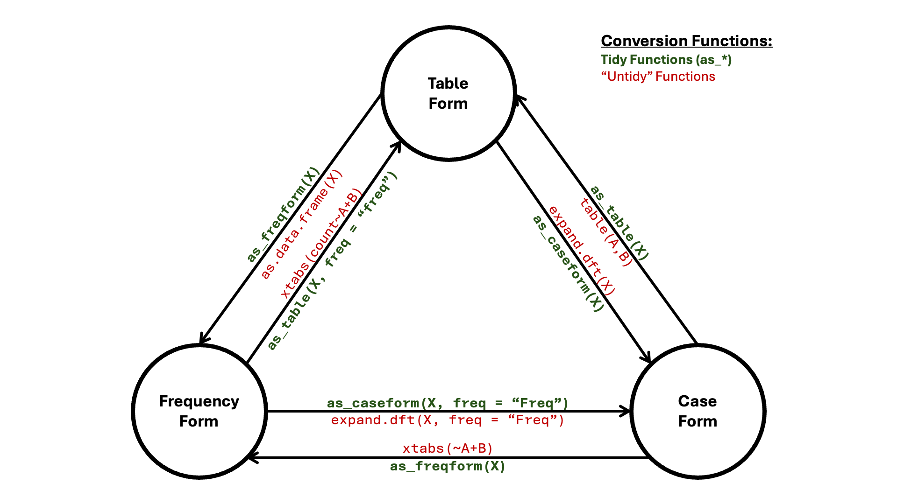
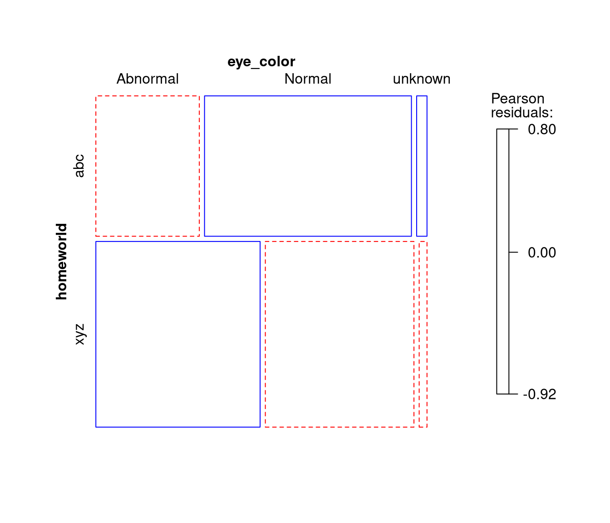

1a. Steps Toward Tidy Categorical Data Analysis
May the Forms Be with
You: Novel Functions to Intuitively Convert Among Forms and Collapse
Variable Levels Presented Using the starwars Data.
Gavin M. Klorfine
Source:vignettes/a1a-convert-collapse.Rmd
a1a-convert-collapse.Rmd
Overview
While R provides many intuitive facilities for the manipulation of
continuous variables (such as those in the tidyverse
collection of packages), it somewhat lacks the equivalent for
categorical data. Two such areas include the collapsing of variable
levels (e.g., combining hair colours of “Brown” and “Black” into a
“Dark” category) and the conversion between forms of categorical data
(e.g., from a table of entries to a data.frame
containing frequencies for each combination of variable levels).
Tidy Collapsing
In R, when trying to collapse levels of a variable in a dataset (e.g., combining hair colours of “Brown” and “Black” into a “Dark” category), it was often the case that one would need to first convert amongst forms, “collapse” their data, aggregate the duplicate rows, and finally convert back to the initial form.
collapse_levels() simplifies this process, allowing for
the intuitive collapsing of variable levels for datasets of any form.
One just needs to ensure that an argument of
freq = "the frequency column name" is supplied when the
inputted dataset is in frequency form.
Functionality of collapse_levels() is demonstrated below
using the starwars data from the dplyr
package. This dataset contains case form data on various characters in
the Star Wars franchise. Variables considered in this vignette are a
character’s hair_color, skin_color, and
eye_color. Taken as is, this would correspond to an \(11 \times 28 \times 15\) contingency table…
Time to collapse!
Here I load the starwars data and select the variables
of interest. For simplicity, I then remove rows containing
NA values.
data("starwars", package = "dplyr")
star_case <- starwars |>
dplyr::select(c("hair_color", "skin_color", "eye_color")) |>
tidyr::drop_na()
str(star_case)
## tibble [82 × 3] (S3: tbl_df/tbl/data.frame)
## $ hair_color: chr [1:82] "blond" "none" "brown" "brown, grey" ...
## $ skin_color: chr [1:82] "fair" "white" "light" "light" ...
## $ eye_color : chr [1:82] "blue" "yellow" "brown" "blue" ...First, taking a look at the levels of variable
hair_color, there are many ways one might want to collapse
these categories:
unique(star_case$hair_color)
## [1] "blond" "none" "brown" "brown, grey"
## [5] "black" "auburn, white" "auburn, grey" "white"
## [9] "grey" "auburn" "blonde"Example: Likely the most natural of these ways is the following:
- Collapse different spellings of
"blond"(i.e.,"blond"and"blonde"becomeBlonde). - Collapse different shades of
"brown"(i.e.,"brown"and"brown, grey"becomeBrown). - Collapse different shades of
"auburn"(i.e.,"auburn, white","auburn, grey", and"auburn"becomeAuburn). - Keep
"none"as-is. - Keep
"white"as-is. - Keep
"grey"as-is. - Keep
"Black"as-is.
Here is how to do this using collapse_levels():
collapsed.star_case <- collapse_levels(
star_case, # The dataset
hair_color = list( # Assign the variable to be collapsed to a list
# Format the list as NewLevel = c("old1", "old2", ..., "oldn")
Blonde = c("blond", "blonde"),
Brown = c("brown", "brown, grey"),
Auburn = c("auburn, white", "auburn, grey", "auburn")
)
)
str(collapsed.star_case)
## tibble [82 × 3] (S3: tbl_df/tbl/data.frame)
## $ hair_color: Factor w/ 7 levels "Auburn","black",..: 3 6 4 4 4 2 1 3 1 4 ...
## $ skin_color: chr [1:82] "fair" "white" "light" "light" ...
## $ eye_color : chr [1:82] "blue" "yellow" "brown" "blue" ...
unique(collapsed.star_case$hair_color)
## [1] Blonde none Brown black Auburn white grey
## Levels: Auburn black Blonde Brown grey none whiteSecond, one might also want to collapse levels of variable
skin_color:
unique(star_case$skin_color)
## [1] "fair" "white" "light"
## [4] "unknown" "green" "pale"
## [7] "metal" "dark" "brown mottle"
## [10] "brown" "grey" "mottled green"
## [13] "orange" "blue, grey" "grey, red"
## [16] "red" "blue" "grey, blue"
## [19] "white, blue" "grey, green, yellow" "yellow"
## [22] "tan" "fair, green, yellow" "silver, red"
## [25] "green, grey" "red, blue, white" "brown, white"
## [28] "none"Example: I decided to arbitrarily collapse these as follows:
- Keep
"none"as-is. - Keep
"unknown"as-is. -
Shades, comprising all levels that begin with"white","grey","dark","light", and"fair". -
Rainbows, comprising all other levels.
Note that when working with real data, arbitrary decisions involving the collapsing of variable levels are a VERY bad idea. Collapses should be grounded in strong, data-driven justification. Arbitrary collapsing is employed in this vignette purely for pedagogical and illustrative purposes.
collapsed.star_case <- collapse_levels(
collapsed.star_case,
skin_color = list(
Shades = c(
"fair", "white", "light", "dark", "grey", "grey, red",
"grey, blue", "white, blue", "grey, green, yellow", "fair, green, yellow"
),
Rainbows = c(
"green", "pale", "metal", "brown mottle", "brown", "mottled green",
"orange", "blue, grey", "red", "blue", "yellow", "tan", "silver, red",
"green, grey", "red, blue, white", "brown, white"
)
)
)
str(collapsed.star_case)
## tibble [82 × 3] (S3: tbl_df/tbl/data.frame)
## $ hair_color: Factor w/ 7 levels "Auburn","black",..: 3 6 4 4 4 2 1 3 1 4 ...
## $ skin_color: Factor w/ 4 levels "Rainbows","Shades",..: 2 2 2 2 2 2 2 2 2 4 ...
## $ eye_color : chr [1:82] "blue" "yellow" "brown" "blue" ...
unique(collapsed.star_case$skin_color)
## [1] Shades unknown Rainbows none
## Levels: Rainbows Shades none unknownThird, one may also want to collapse levels of variable
eye_color:
unique(star_case$eye_color)
## [1] "blue" "yellow" "brown" "blue-gray"
## [5] "hazel" "red" "orange" "black"
## [9] "pink" "unknown" "red, blue" "gold"
## [13] "green, yellow" "white" "dark"Example: Again, I decided to arbitrarily collapse these as follows:
-
Normal, with levels of typical human eye color (i.e.,"blue","blue-gray","brown","hazel", and"dark"). -
Abnormal, with levels of eye colours that would be abnormal for humans (e.g.,"red","pink","gold", etc.). - Keep
unknownas-is.
collapsed.star_case <- collapse_levels(
collapsed.star_case,
eye_color = list(
Normal = c("blue", "brown", "blue-gray", "hazel", "dark"),
Abnormal = c(
"yellow", "red", "orange", "black", "pink", "red, blue", "gold",
"green, yellow", "white"
)
)
)
str(collapsed.star_case)
## tibble [82 × 3] (S3: tbl_df/tbl/data.frame)
## $ hair_color: Factor w/ 7 levels "Auburn","black",..: 3 6 4 4 4 2 1 3 1 4 ...
## $ skin_color: Factor w/ 4 levels "Rainbows","Shades",..: 2 2 2 2 2 2 2 2 2 4 ...
## $ eye_color : Factor w/ 3 levels "Abnormal","Normal",..: 2 1 2 2 2 2 2 2 2 2 ...
unique(collapsed.star_case$eye_color)
## [1] Normal Abnormal unknown
## Levels: Abnormal Normal unknownIn addition, one may want (and is able) to collapse levels of
multiple variables in a single call to
collapse_levels().
Example: To illustrate this (and to provide
an easy working example for the following “Tidy Conversions” section),
the collapsed.star_case data is arbitrarily collapsed as
follows to correspond to a \(3 \times 3 \times
3\) contingency table:
- Variable
hair_color:-
Darkcorresponding to levels"Brown","black", and"Auburn". -
Lightcorresponding to levels"Blonde","white", and"grey". - Keep
"none"as-is.
-
- Variable
skin_color:-
Othercorresponding to levels"none"and"unknown". - Keep
Rainbowsas-is. - Keep
Shadesas-is.
-
- Variable
eye_colorkept as-is.
collapsed.star_case <- collapse_levels(
collapsed.star_case,
hair_color = list( # First variable
Dark = c("Brown", "black", "Auburn"),
Light = c("Blonde", "white", "grey")
),
skin_color = list( # Second variable
Other = c("none", "unknown")
)
)
unique(collapsed.star_case$hair_color)
## [1] Light none Dark
## Levels: Dark Light none
unique(collapsed.star_case$skin_color)
## [1] Shades Other Rainbows
## Levels: Rainbows Shades Other
str(collapsed.star_case)
## tibble [82 × 3] (S3: tbl_df/tbl/data.frame)
## $ hair_color: Factor w/ 3 levels "Dark","Light",..: 2 3 1 1 1 1 1 2 1 1 ...
## $ skin_color: Factor w/ 3 levels "Rainbows","Shades",..: 2 2 2 2 2 2 2 2 2 3 ...
## $ eye_color : Factor w/ 3 levels "Abnormal","Normal",..: 2 1 2 2 2 2 2 2 2 2 ...Tidy Conversions
Until now, converting amongst forms of categorical data in R has been
somewhat onerous. As outlined in 1. Creating
and manipulating frequency tables, the below table shows the typical
process for converting among forms (A, B, and
C represent categorical variables, X
represents an R data object):
| From this | To this | ||
|---|---|---|---|
| Case form | Frequency form | Table form | |
| Case form | noop | xtabs(~A+B) |
table(A,B) |
| Frequency form | expand.dft(X) |
noop | xtabs(count~A+B) |
| Table form | expand.dft(X) |
as.data.frame(X) |
noop |
Instead, one may simply use as_table(X) to convert to
table form, as_freqform(X) to convert to frequency form,
and as_caseform(X) to convert to case form. These are
illustrated in the network (node/edge) diagram below:

Additionally, there are functions as_array(X) and
as_matrix(X) for converting to those respective types.
Like collapse_levels(), the single thing to keep in mind
when employing these functions is the following: when your object
X is in frequency form, an argument of
freq = "your frequency column name" must be supplied.
Besides this, the rote memory work of having to remember which function
to use to convert form X to form Y is now completely removed.
Functionality of these “tidy” conversion functions are demonstrated
below using the collapsed.star_case data from the most
recent example (i.e., the data corresponding to a \(3 \times 3 \times 3\) contingency
table).
Example: Convert the
collapsed.star_case data into frequency form. Name this
data star_freqform.
star_freqform <- as_freqform(collapsed.star_case)
str(star_freqform)
## tibble [27 × 4] (S3: tbl_df/tbl/data.frame)
## $ hair_color: Factor w/ 3 levels "Dark","Light",..: 1 2 3 1 2 3 1 2 3 1 ...
## $ skin_color: Factor w/ 3 levels "Rainbows","Shades",..: 1 1 1 2 2 2 3 3 3 1 ...
## $ eye_color : Factor w/ 3 levels "Abnormal","Normal",..: 1 1 1 1 1 1 1 1 1 2 ...
## $ Freq : int [1:27] 1 2 18 0 1 11 0 0 1 7 ...Note that if one would like a data frame instead of a tibble, an
argument of tidy = FALSE needs to be provided. Naturally,
this tidy argument is present only in functions
as_freqform() and as_caseform().
Example: Convert the
collapsed.star_case data into a data frame in frequency
form.
as_freqform(collapsed.star_case, tidy = FALSE) |> str()
## 'data.frame': 27 obs. of 4 variables:
## $ hair_color: Factor w/ 3 levels "Dark","Light",..: 1 2 3 1 2 3 1 2 3 1 ...
## $ skin_color: Factor w/ 3 levels "Rainbows","Shades",..: 1 1 1 2 2 2 3 3 3 1 ...
## $ eye_color : Factor w/ 3 levels "Abnormal","Normal",..: 1 1 1 1 1 1 1 1 1 2 ...
## $ Freq : int 1 2 18 0 1 11 0 0 1 7 ...Example: Convert the frequency form data,
star_freqform, into table form. Name this data
star_tab. Because we are converting from frequency
form, the freq = "frequency column name" argument must be
supplied.
star_tab <- as_table(star_freqform, freq = "Freq")
str(star_tab)
## 'xtabs' int [1:3, 1:3, 1:3] 1 2 18 0 1 11 0 0 1 7 ...
## - attr(*, "dimnames")=List of 3
## ..$ hair_color: chr [1:3] "Dark" "Light" "none"
## ..$ skin_color: chr [1:3] "Rainbows" "Shades" "Other"
## ..$ eye_color : chr [1:3] "Abnormal" "Normal" "unknown"
## - attr(*, "call")= language xtabs(formula = reformulate(cols, response = freq), data = obj)Example: Convert the table form data,
star_tab, into an array. Name this data
star_array.
star_array <- as_array(star_tab)
class(star_array)
## [1] "array"
str(star_array)
## int [1:3, 1:3, 1:3] 1 2 18 0 1 11 0 0 1 7 ...
## - attr(*, "dimnames")=List of 3
## ..$ hair_color: chr [1:3] "Dark" "Light" "none"
## ..$ skin_color: chr [1:3] "Rainbows" "Shades" "Other"
## ..$ eye_color : chr [1:3] "Abnormal" "Normal" "unknown"
## - attr(*, "call")= language xtabs(formula = reformulate(cols, response = freq), data = obj)To convert to a matrix, one also needs to specify row and column
dimensions. This is done using the
dims = c("dim1", "dim2", ..., "dim_n") argument, which
works by summing over the dimensions excluded from this call. The first
provided dimension is taken as the row dimension, with the second
dimension taken as the column dimension.
Example: Convert the array form data,
star_array, into a matrix with dimensions
"hair_color" and "eye_color". Name this data
star_mat.
star_mat <- as_matrix(star_array, dims = c("hair_color", "eye_color"))
class(star_mat)
## [1] "matrix" "array"
str(star_mat)
## int [1:3, 1:3] 1 3 30 34 6 5 0 0 3
## - attr(*, "dimnames")=List of 2
## ..$ hair_color: chr [1:3] "Dark" "Light" "none"
## ..$ eye_color : chr [1:3] "Abnormal" "Normal" "unknown"Note that the dims argument works the same way for all
other tidy conversion functions.
Example: Convert the table form data,
star_tab, into frequency form with dimensions
"hair_color" and "eye_color".
as_freqform(star_tab, dims = c("hair_color", "eye_color")) |> str()
## tibble [9 × 3] (S3: tbl_df/tbl/data.frame)
## $ hair_color: Factor w/ 3 levels "Dark","Light",..: 1 2 3 1 2 3 1 2 3
## $ eye_color : Factor w/ 3 levels "Abnormal","Normal",..: 1 1 1 2 2 2 3 3 3
## $ Freq : int [1:9] 1 3 30 34 6 5 0 0 3Proportions
The last piece of these conversion functions is the prop
argument, allowing users to convert cells/frequencies to proportions.
Calculated proportions may either be relative to the grand total
(prop = TRUE) or to one or more margins
(prop = c("margin1", "margin2", ... "margin_n")).
Note that as_caseform() is the only of the tidy
conversion functions to not include a prop argument. Also,
as_caseform() will not convert proportional data.1
Example: Convert star_mat into
a table of proportions that are relative to the grand total.
star_mat # To view the original
## eye_color
## hair_color Abnormal Normal unknown
## Dark 1 34 0
## Light 3 6 0
## none 30 5 3
as_table(star_mat, prop = TRUE)
## eye_color
## hair_color Abnormal Normal unknown
## Dark 0.01219512 0.41463415 0.00000000
## Light 0.03658537 0.07317073 0.00000000
## none 0.36585366 0.06097561 0.03658537Example: Convert star_mat into
a table of proportions that are relative to the marginal sums of
hair_color.
as_table(star_mat, prop = "hair_color")
## eye_color
## hair_color Abnormal Normal unknown
## Dark 0.02857143 0.97142857 0.00000000
## Light 0.33333333 0.66666667 0.00000000
## none 0.78947368 0.13157895 0.07894737Example: Convert star_mat into
a table of proportions that are relative to the marginal sums of both
hair_color and eye_color. Since these are the
only two dimensions, cell proportions will all be equal to \(1.0\) (except for cells where no data
exists).
Taken Together
Taking collapse_levels() and the tidy conversion
functions together, one now has an intuitive framework for manipulating
categorical data.
Example: The starwars data
also has a variable named homeworld, specifying the planet
that a given character was from. The below code does the following:
- Create data
home_starfrom datasetstarwars. The new data includes bothhomeworldand the previous variables of interest (hair_color,eye_color, andskin_color). Missing values are then omitted. - Sort
homeworldalphabetically. - Collapse the first half of the sorted
homeworlds into a level namedabc. - Collapse the second half of the sorted
homeworlds into a level namedxyz. - Collapse
eye_coloraccording to the previousAbnormal,Normal, and"unknown"conventions. - Convert the collapsed data into a table with dimensions
homeworldandeye_color. Call this tabletab.home_starand plot the result in a mosaic display. - Convert
tab.home_starinto a matrix of proportions (relative to the grand total).
home_star <- starwars |>
dplyr::select(c("hair_color", "skin_color", "eye_color", "homeworld")) |>
tidyr::drop_na()
# Sort unique levels of homeworld
lvls <- home_star$homeworld |> unique() |> sort()
lvls
## [1] "Alderaan" "Aleen Minor" "Bespin" "Bestine IV"
## [5] "Cato Neimoidia" "Cerea" "Champala" "Chandrila"
## [9] "Concord Dawn" "Corellia" "Coruscant" "Dathomir"
## [13] "Dorin" "Endor" "Eriadu" "Geonosis"
## [17] "Glee Anselm" "Haruun Kal" "Iktotch" "Iridonia"
## [21] "Kalee" "Kamino" "Kashyyyk" "Malastare"
## [25] "Mirial" "Mon Cala" "Muunilinst" "Naboo"
## [29] "Ojom" "Quermia" "Ryloth" "Serenno"
## [33] "Shili" "Skako" "Socorro" "Stewjon"
## [37] "Sullust" "Tatooine" "Toydaria" "Trandosha"
## [41] "Troiken" "Tund" "Umbara" "Utapau"
## [45] "Vulpter" "Zolan"
# Collapse variable levels
collapsed.home_star <- collapse_levels(
home_star,
homeworld = list(
abc = lvls[1:(length(lvls)/2)],
xyz = lvls[(length(lvls)/2 + 1):length(lvls)]
),
eye_color = list(
Normal = c("blue", "brown", "blue-gray", "hazel", "dark"),
Abnormal = c(
"yellow", "red", "orange", "black", "pink", "red, blue", "gold",
"green, yellow", "white"
)
)
)
# Convert to table of dimensions 'homeworld' and 'eye_color'
tab.home_star <- as_table(collapsed.home_star, dims = c("homeworld", "eye_color"))
# Plot as mosaic display
mosaic(tab.home_star, shading = TRUE, gp = shading_Friendly)
# Convert table into matrix of proportions. Note argument 'dims' was not supplied
# as we already know that there are exactly 2 dimensions.
as_matrix(tab.home_star, prop = TRUE)
## eye_color
## homeworld Abnormal Normal unknown
## abc 0.1388889 0.2777778 0.01388889
## xyz 0.2916667 0.2638889 0.01388889
## attr(,"call")
## xtabs(formula = reformulate(cols), data = obj)Thus, this constitutes a pipeline for working with categorical data:
- Gather data and clean it.
- Collapse levels when substantively necessary.
- Convert forms, select dimensions, and/or take proportions if necessary.
dataset |> # Gather the data
select(...) |> drop_na() |> ... |> # Clean the data
collapse_levels(...) |> # Collapse levels as necessary
as_form(...) # Convert forms, select dimensions, take proportionsWhen viewed this way, these functions appear to be the start of a grammar of categorical data analysis.